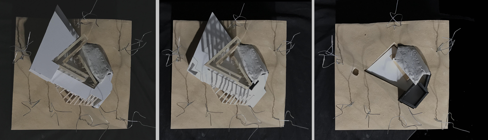
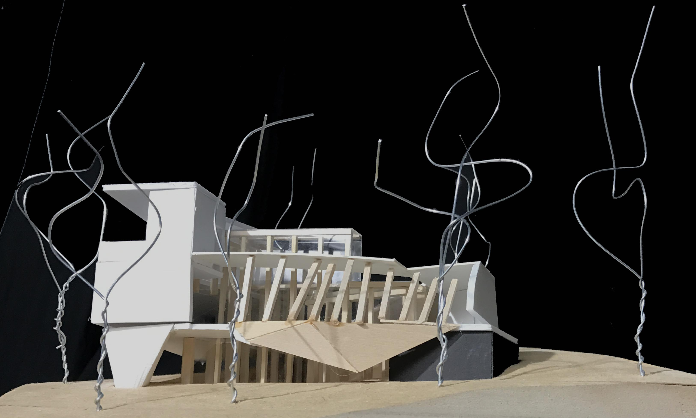
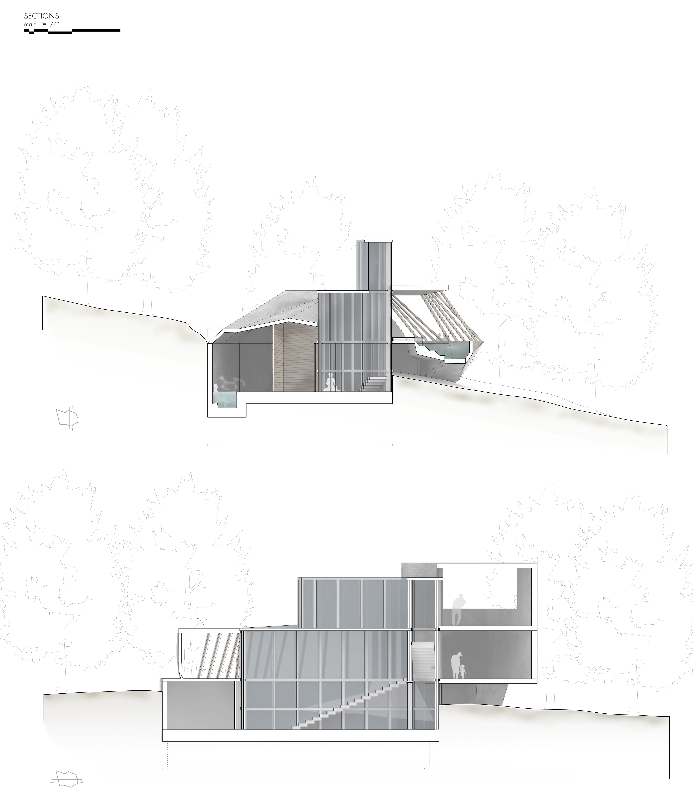
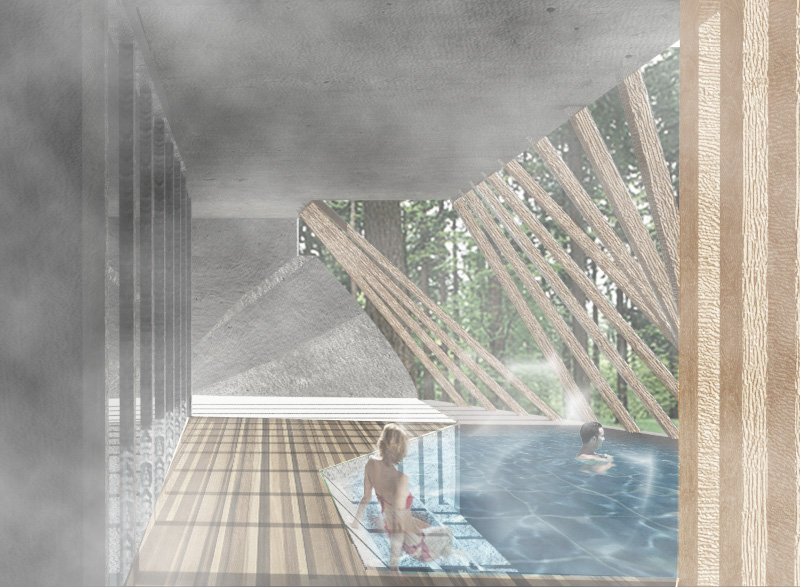
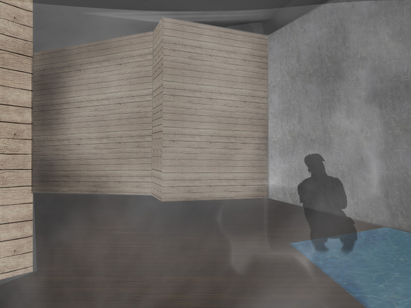
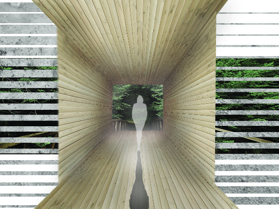
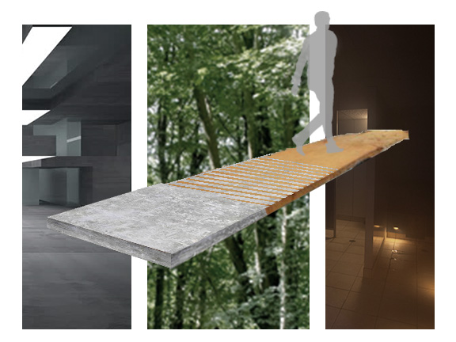

Saco Lake Bathhouse
wellness center
Studio Elaboration II Jeremy Ficca, Jennifer Lucchino
ABOUT
Saco Lake is located along Crawford Notch in New Hampshire USA. The remote site is a couple hours from the nearest city. The distance from the city and abundance of vegetation fosters an experience of reinvigoration and relaxation. The building is situated far from the road to exaggerate the discon- nect from bustling city life. I used the roman bathing sequence [frigidarium, tepidarium, and caldarium] as the model for the bathing sequence to evoke a relaxing and refreshing experience. The idea of reinvigoration drives the design of the bathhouse so I changed the linear progression of roman bathing into a cycle; people will end up where they began, but feel as if they were a different person. Architecture plays a major role in guiding people through this prescribed circulation. Material properties begin to direct people in certain directions they should be going, and different materials begin to differentiate one space from another.
Wood and Illustration Board Spatial Model [1'=1/8" scale]



Wood and Rockite Materials Study Model [1'=1/4" scale]


Line Drawings

Atmospheric Collages and Renders



